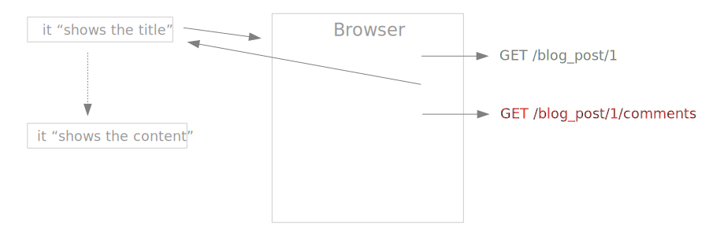

Welcome, Embeerists
to the Ember.js Meetup #3 in Brussels
15th of May 2014

Thank you BetaGroup for the venue
Hstry is our beer provider tonight
Schedule
- How to test your Ember app (Yoran)
- Boost the loading time of your Ember app with data pre-loading (Boris)
- How to call A from B in Ember (Yoran)
About me
Works at Hstry (hiring Ember devs!)
Blogs on YoranBrondsema.com
Tweets on @YoranBrondsema

About this meetup
Looking for organizer(s)!
Testing an Ember.js app
- From my experiences working on Hstry
- Ember.js front-end and Ruby on Rails back-end
- Will cover the whole stack
I hope you do tests. And if you don't, you should.
Prevent regressions
Confidence
Enables methodologies like BDD and TDD
Documentation
3 levels of testing
Unit tests
Controller tests
Integration tests
Unit tests
- Belong to back-end
- Test your models
- Validations on your data
- Instance methods
- Class methods
describe BlogPost do
let(:blog_post) { FactoryGirl.build(:blog_post) }
it("has a title") { expect(blog_post).to validate_presence_of(:title) }
describe "#related_posts" do
let(:related_posts) { blog_post.related_posts }
it("returns an array of at most 5 posts") { ... }
end
end
Controller tests
- Belong to back-end
- Interface between front-end and back-end
- More important than unit tests
- Test error codes
- Test changes to models
- Test structure of response
describe BlogPostsController do
describe "POST #create" do
# PARAMETER VALIDATION
context "Invalid authentication token" do
it("returns 'unauthorized' status code") { ... }
end
context "Blank title" do
it("returns 'unprocessable_entity' status code") { ... }
end
context "Valid parameters" do
# MODELS UPDATE
it("creates a new BlogPost") { ... }
# SEND RESPONSE
it("returns '201 Created' status code") { ... }
it("returns a JSON serialization of a blog post") { ... }
end
end
end
Integration tests
- Simulates user behavior in browser
- Back in "old" days, was driven by back-end (Rails views)
- In Rails, tested with RSpec + Capybara
- Run on Selenium, PhantomJS, ...
This is how the Hstry application was tested too
... but it had problems!
Very slow
- Starts a new fresh browser session for each test
Synchronization issues
Move on to next test while controller actions are still running. Test failure.
Random fails
Do all integration testing in Ember.js itself
Way faster
Moved from ~25 minutes to ~2 minutes testing time
No more synchronization issues
Promises!
Promotes separation between back-end and front-end
What to test?
What the user is supposed to see.
Click on this button, should see this.
That calls to API with proper parameters are made.
Click on this "Submit" button, issues POST request to endpoint XXX with parameters YYY
We know that if parameters are ok, it does what it needs to do
What do you need?
- Testing framework: QUnit (default for Ember), Mocha, Jasmine,...
- Test runner: Teaspoon (Rails), Testem (Node.js), Karma (Node.js)
DEMO
Resources
What about seed data?
Set up seed data in API endpoint /test_reset
Call this endpoint before each test
Do not open this endpoint in production!
Testing Ember components
- Isolated components with a clear interface, ideal for testing
- "Test once, re-use with confidence everywhere"
- See Ember.js Guide: Testing Components
Short intro to integration testing in Ember.js
Questions?
Thank you
Oh, and Hstry is still hiring :-)
How to call A from B in Ember.js
* from talk at Boston Ember.js meetup by Ben Donaldson
Ember.js has many layers
- Routes
- Controllers
- Views
- Templates
How do you call layer X when you're in layer Y?
We have two models Apple and Orange
Each has its own route, controller, view and template
I'm in AppleRoute
// Apple
this.modelFor('apple');
// OrangeRoute
this.get('router').getHandler('orange');
// AppleController
this.controllerFor('apple');
// AppleView
???
// AppleTemplate
???
I'm in AppleController
// Apple
this.get('content');
this.get('model');
// AppleRoute
this.get('target');
// OrangeController
App.AppleController = Ember.Controller.extend({
...,
needs: ['orange'],
...
});
this.get('controllers.orange');
// AppleView
App.AppleView = Ember.View.extend({
_setConnection: function() {
this.get('controller').on('event', this, this.eventHappened);
}.on('init'),
eventHappened: function() { ... }
});
this.trigger('event'); // in AppleController
// AppleTemplate
???
I'm in AppleView
// Apple
this.get('context');
this.get('controller.content');
this.get('controller.model');
// AppleRoute
this.get('controller.target');
// AppleController
this.get('controller');
// OrangeView
???
// AppleTemplate
this.get('template'); // Handlebars function
this.get('element'); // DOM element
I'm in AppleTemplate
// Apple
{{view.context}}
{{controller.content}}
{{controller.model}}
// AppleRoute
{{controller.target}}
// AppleController
{{controller}}
// AppleView
{{view}}
// OrangeTemplate
???
Ugly, but if necessary...
// Via the container (accessible pretty much everywhere)
this.get('container').lookup('route:apple');
// Worse
App.__container__.lookup('route:apple');
// Manual connections on 'init'
App.AppleView = Ember.View.extend({
_setConnections: function() {
this.get('controller').set('appleView', this);
}.on('init')
});